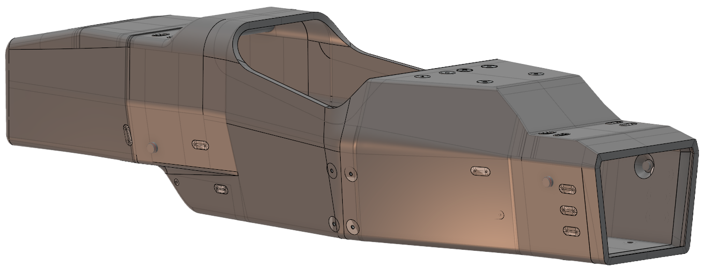
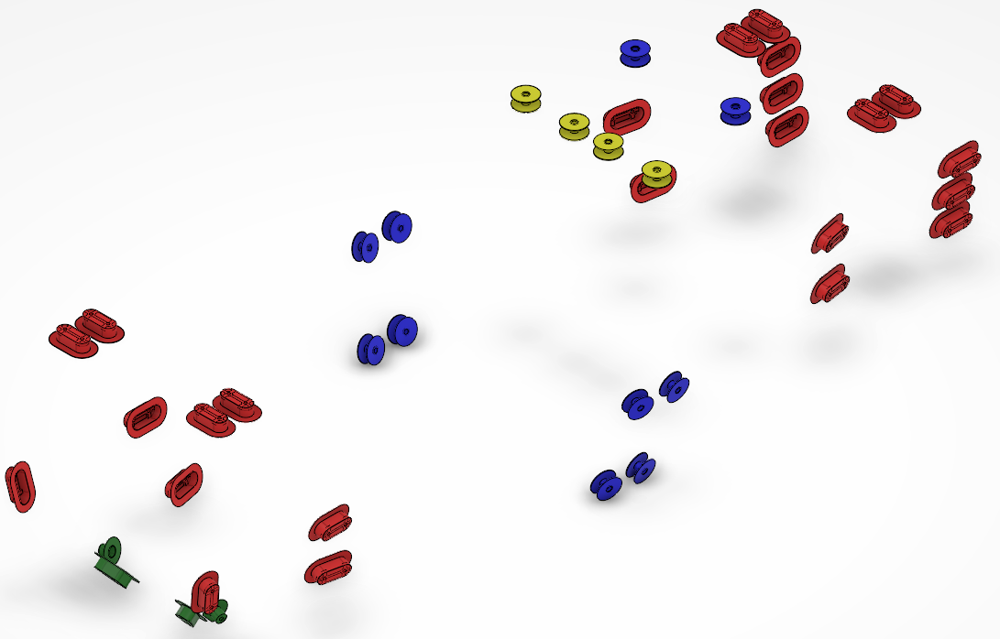
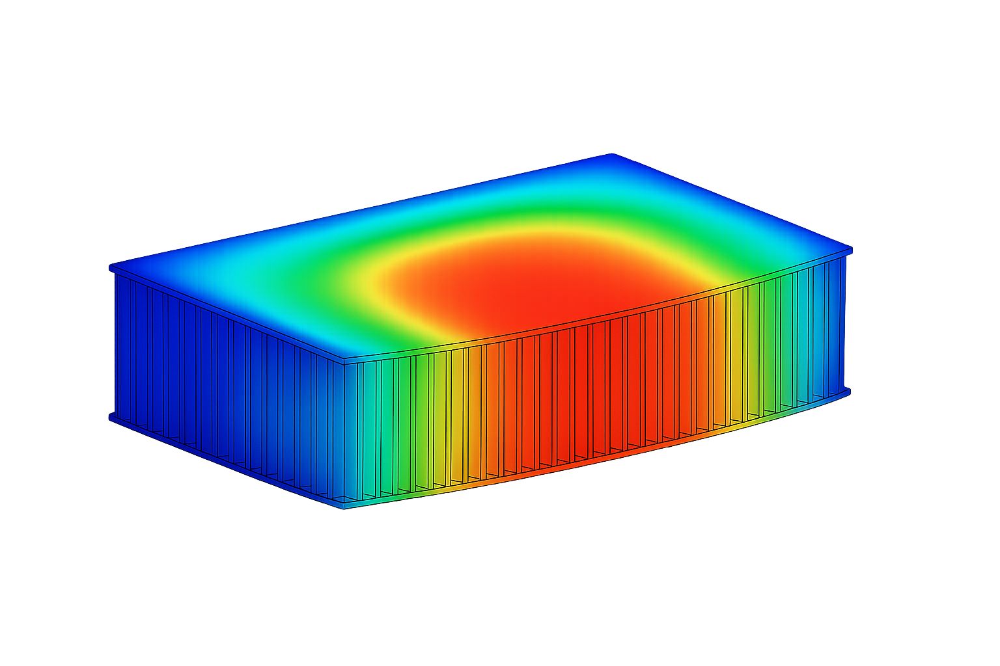
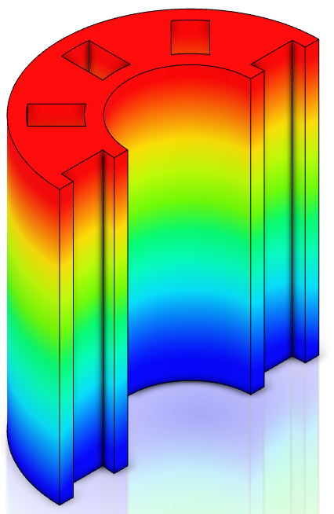
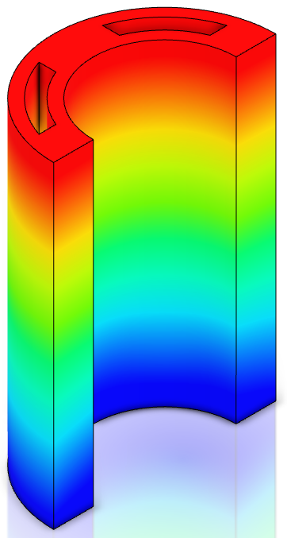
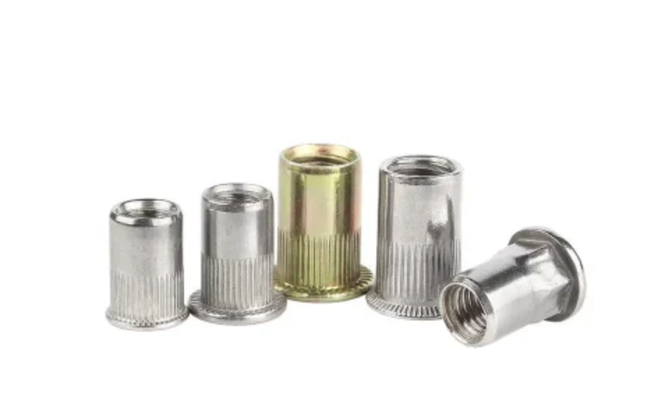

Composite Insert Optimization
Characterization and optimization of inserts for a composite sandwich monocoque, with the objective of improving structural reliability, reducing mass, simplifying manufacturing, and standardizing integration methods for the EPFL Racing Team Formula Student car.
The project combined CAD development, finite element simulation, comparison of insert families, and a broader engineering reflection on manufacturability, repeatability and structural integration within a high-performance composite chassis.

Context
The EPFL Racing Team develops a new electric Formula Student race car each season, with the monocoque acting as the structural core of the chassis and supporting critical subsystems such as suspension, steering, safety structures and harness interfaces.
Because the monocoque is built as a carbon sandwich structure with a lightweight aluminum honeycomb core, local interfaces require dedicated inserts to transfer concentrated loads without crushing the core or damaging the skins.
Engineering Challenge
Sandwich structures provide excellent stiffness-to-weight performance, but they remain highly sensitive to concentrated loads and direct mechanical fastening.
The challenge was therefore to design inserts that remain lightweight and production-friendly while ensuring sufficient mechanical performance, precise integration and reliable load transfer into the composite monocoque.
Insert Strategy & Contributions
- Analysis of the insert solutions historically used on the monocoque and identification of their limitations
- Study of both in-production inserts integrated during layup and post-production inserts added afterward
- Development of a CAD and FEM-based comparison methodology for different insert concepts
- Comparison of geometries, materials, mass, stiffness and manufacturability
- Contribution to a more homogeneous, reproducible and better documented insert strategy for future seasons
Simulation & Validation
The project relied heavily on 3DEXPERIENCE finite element simulations, starting from simplified insert-only models and progressing toward a more realistic plate model including composite skins, a detailed honeycomb core and insert integration.
The work included von Mises stress evaluation for metallic inserts, displacement analysis, and later Tsai-Wu and Tsai-Hill criteria for composite failure assessment in the sandwich structure.
Performance Highlights
- Load case definition based on suspension load paths and conservative worst-case assumptions
- 5000 N retained as representative design load per insert for the main simulations
- Optimized first design at 15 mm external diameter: about 6.35 g mass
- At 3000 N on the sandwich model: Tsai-Wu = 0.356 and Tsai-Hill = 0.33
- Results remained clearly below critical composite failure thresholds
Manufacturing Perspective
Beyond pure structural performance, the project also addressed workshop reality: machining time, installation constraints, repeatability, positioning precision, and the cost of external manufacturing processes.
One major outcome was that some lighter designs were mechanically attractive but not justified once production complexity and outsourcing requirements were considered.
Project Impact
This work lays the foundation for a more robust and standardized insert strategy within the EPFL Racing Team, improving both the design process and the long-term transfer of technical knowledge between seasons.
It also provides a clearer framework for future validation work, including adhesive modelling, experimental pull-out testing, localized composite reinforcement optimization and broader CAD library standardization.
Main Findings
- Past in-production inserts were structurally effective but too heterogeneous and complex
- Post-production inserts required better characterization in terms of mass, adhesive and installation
- A 15 mm external diameter emerged as the best compromise for the first optimized design
- The first design remained the strongest compromise between mass, rigidity and ease of production
- The simulation methodology now provides a reusable basis for future insert developments
Image Gallery





